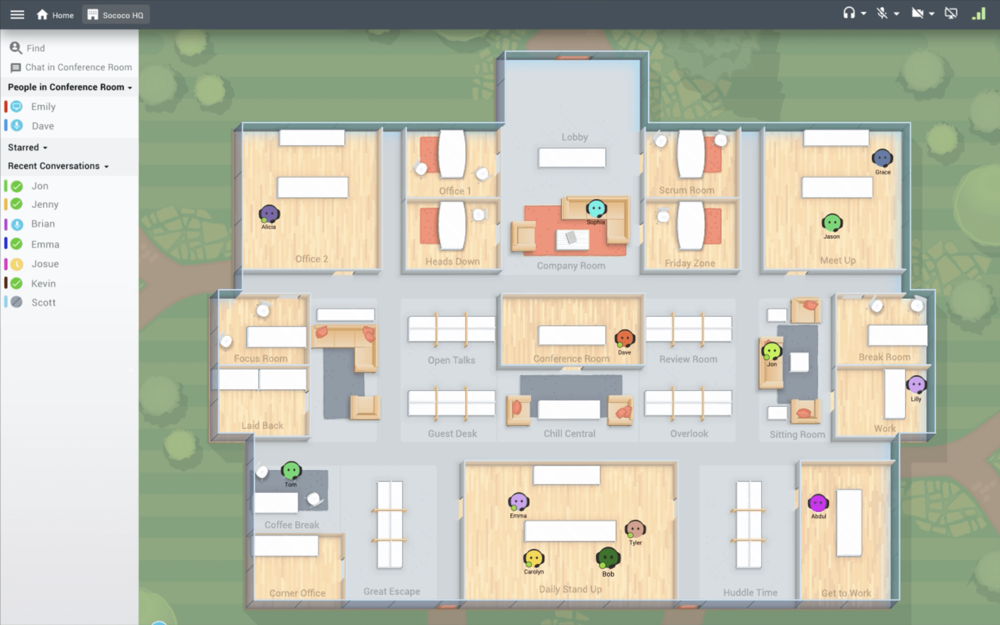
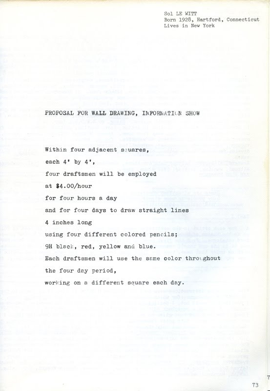
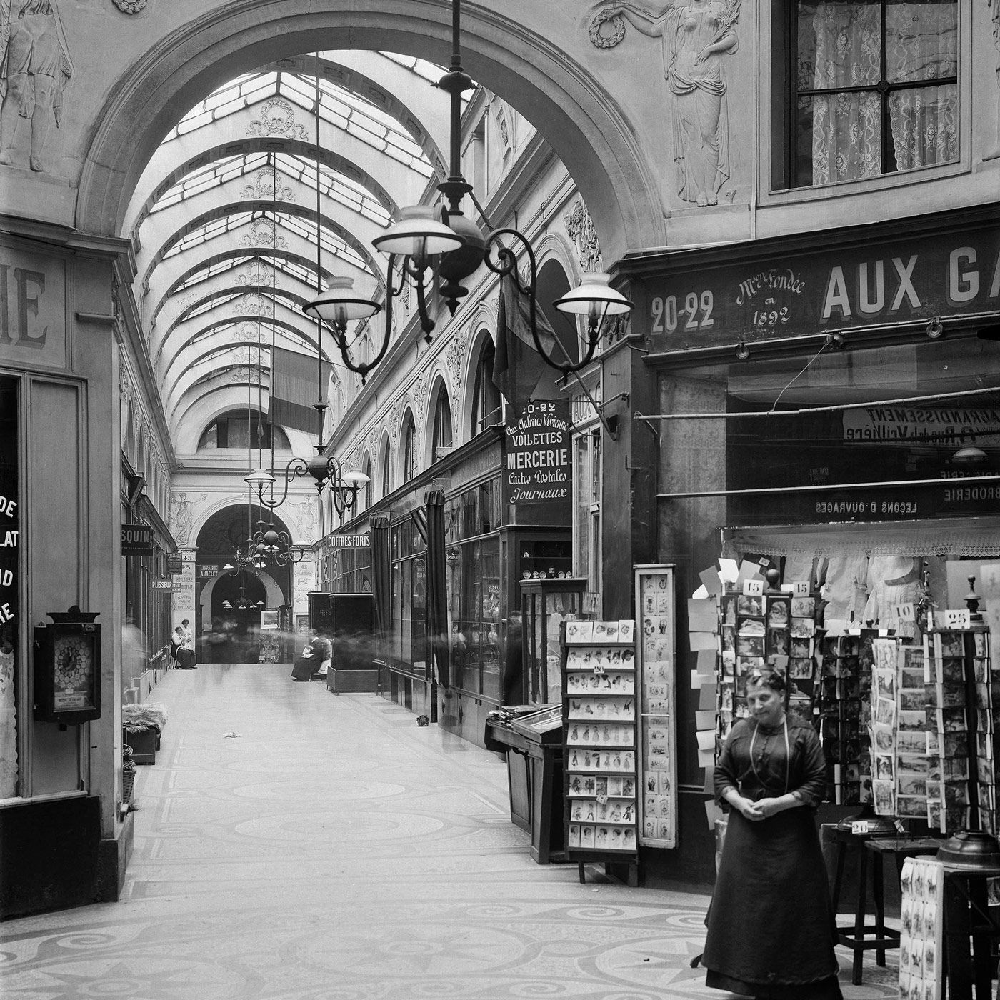
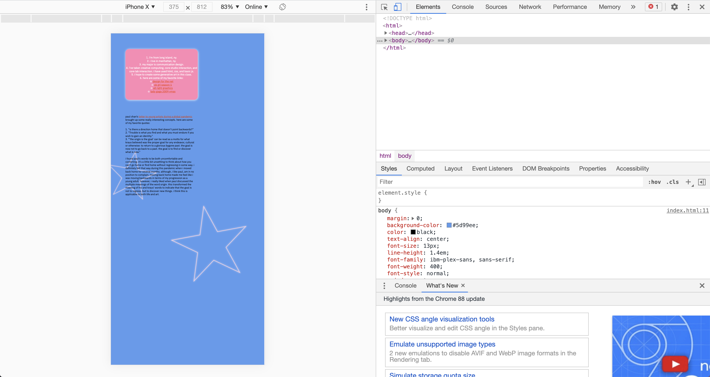

week 14 :)
against software development by michael arntzeniusthis reading was comprised of 3 short sections:
1. arntzenius discusses how simple and generic code is what prevails on the internet, probably because it’s easier to adapt and understand. however, more unique, “messy,” code with more character is more rare, and arntzenius sees this as a shame.
2. this section basically states that until human systems are collectively better organized and improved overall, we can’t really made that large of an advancement in software. i found this kind of interesting because it implies that humans still have the upper hand on technology and it’s ability to advance. i also appreciated the reference to andreessen’s “why software is eating the world” and the way links were used in this passage.
3. again, this passage reaffirms human autonomy over the computer and reminds us that we have agency over the types of things we put out into the world. arntzenius encourages us to build a world worth living in.
overall, i thought this was the perfect message to end the semester on.
reflecting on this semester, i definitely learned from the readings. i absorbed some really interesting perspectives on software’s relationship to the physical world, interfaces, and data exhaust & archiving. i really enjoyed the class vibe of sharing resources and sharing work with each other. the latter was probably my favorite part of the class because i was so inspired by and impressed with my classmates’ work. at the kickoff of the final project, i felt extremely stuck and limited by my coding abilities (or lack thereof), particularly when it comes to interactivity. but, by the end of this project, i think i learned a valuable lesson about utilizing the tools that i do have in my kit to get the job done. i think the trend of a “spiritual web” in our class is super interesting, and it’s something that i’d love to keep up with as my coding abilities evolve.
week 13
on apps and elementary forms of interfacial life: object, image, superimpositionby benjamin h. braxton
this reading was pretty dense, but i found it to be really interesting. braxton touched on ideas like thinking about apps as a sort of interface for data and ar applications as bringing together an “artificial annotation” of the world and our perception of the physical world. braxton spoke about interfaces in a broader sense that transcends technology, like seeing our hands and bodies as interfaces with the rest of the world.
he also introduces this concept of images and labels that do or maybe don’t do what they represent physically. this may be really off track, but that reminded me of how realistic photo manipulations can be and the consequences of that—it kind of exposes how fragile our culture of images can be. i think braxton kind of touches on something similar when he mentions how the blending of natural and artificial can manipulate the world, even though i think he’s referring to physical expressions of programming becoming more advanced (i think?).
finally, i was very intrigued by the comparison of software to organized religion at the end there, especially in terms of memorialization. one fo my favorite classes at parsons dealt heavily with memorialization and what made for a useful memorial. this part is a bit dense as well, but i’m fascinated by a computer doing the memorializing for you through data while the person behind it doesn’t even have to consciously be involved in that process. i’d like to read more about that.
week 12
spacial interfaces by john palmerthis piece brought up some really interesting points about spacial awareness in design and the advantages of incorporating it into ui.
skeuomorphic design=making ui elements look like their “real world counterparts”
- this recalls interface metaphors and how they made the functions of a computer more easily digestible
- the section that interested me most was on the software sococo. it uses spacial awareness to create a more realistic virtual office environment. the software has been around since before the pandemic, but it seems especially relevant now for obvious reasons. i would lov to try this software out for myself and see how it compares to something like a zoom classroom. while i’m not sure it would resolve issues i deal with now such as screen fatigue, i can see it making for more engaging meetings. having an avatar that you could place in a virtual space seems really fun to me.

week 11
democratize the internet now! by paul ford“because it is digital, it felt anonymous”
- this kind of fits into themes discussed in multiple other articles about animosity on the web and the lack thereof, and how data/any other web activity can follow you around forever.
- also discusses a time on the internet where corporations weren’t privy to the data of millions of users, rather, internet users were all peers socialization used to coccur through linking, but now engines that facilitate interactions between “friends and followers” are massive databases and corporatized. - ford comments that this change isn’t a result of the fabric of the web but instead a cultural change-- peoples expectations of the web are much different now.
after decades of selling new media art, gallerist steven sacks offers his take on nfts by hrag vartanian
- in this interview, steven sacks explains how artists from each generation are just connecting to the tools they have available. he opened his own gallery in 2001 and worked with artist who were just interpreting the media of their time - sacks comments on how nfts, generative art, and digital ownership are not new concepts. he believes that files and software are art, which i would agree with. he also speaks on how he doesn’t like the term crypto-art because it implies that the art is tied to its monetary value from the beginning of its creation and i think that’s something interesting to think about. i don't know if i necessarily agree with that….i dont think that art can be limited by intention. if a piece of art is created with crypto-currency and value in mind, how does that make it any less of a piece of art? it may just be folding another layer of interest/context into the work.
fruitful schools: elliot
- i think that this video kind of represented this class in a way. elliot speaks about "tiny social networks" of people sharing the things they're interested in, and that's the spirit of our classroom. this is also true when they speak about not being afraid of bugs (they may inspire new directions), aka not being afraid to leave behind a trail of mistakes.
week 10
data sweat by amanda k. greene- this piece deals with metdata, something that i didnt really know much about before but now understand to be “digital exhaust” of data (“data about other data”)
- our lives online are “teeming with feelings”
- greene talks about how personal data is and how it can be really revealing of our lives and emotions. this relates to my final project of trying to create a space on the web that is personal/emotional. i also think it was interesting to note that our speed when navigating the internet can also be revealing of our emotions.
- greene also talks about how data can come back to haunt you, which echos themes from web archiving, and how even though things can be deleted, anything posted online (generally) can never truly disappear.
week 9
concept design games book two: playingconcepts found in games:
1. control
2. interactions
3. transformation
i thought it was interesting how the rules of the game were outlined in such great detail. it reminds me of art that’s “generated” in a sense through sets of instructions. the work of sol lewitt comes to mind as an example of artworks that can be replicated by anyone (or by a gallery) given they follow his instructions. The use of the terms “constants” and “variables” were also interesting to link back to words used in programming languages. finally, i was struck by the suggestion to conduct a discussion following the game to analyze the players’ understanding of it. this seems like a pretty straightforward and successful way to experiment further with the games outlined in this reading.

week 8
black gooey universe by american artistGUI or gooey = graphical user interface
it's not at all surprising to read that much of siicon valley is a hub for liberal whiteness. it's disappointing because so many foundational principles of the web can be attributed to women and people of color. Black erasure in tech fields definitely seems to be a long standing issue.
gooey universe
- gooey consolidated interface methods into easily understandable iconography
- i really like interface metaphors, this also reminds me of this laurel schwulst piece making different analogies out of websites.
is counterculture still possible? by the culture journalist
- i really enjoyed the piece we initially read by busta, so i was excited to hear her on this podcast as well.
- idea of counter culture being associated with an aesthetic that's "cool" and "valuable." anti-corporate, anti-mainstream.
- the idea of counter culture being anti-corporate makes me think about how certain brands now will put out campaigns or various messaging supporting the BLM movement. this comes off as disingenuous most of the time because verbalizing the sentiment doesn't matter or do anything for the cause if the company isn't upholding those values at every level.
- i also enjoyed how they further discussed this duality in places, specifically st. marks. can a place be considered countercultural if consumerism is taking place within it? - who benefits from counterculture movements that take place on social media?
week 7
the user condition: computer agency and behavior by silvio lorussoasking the question of what is required for a user to have autonomy when using a computer made of software programmed by somebody else, how much agency the user has
✩ mcneil: “ss smartphones blurred organizational boundaries of online and offline worlds, spatial metaphors lost favor. How could we talk about the internet as a place when we’re checking it on the go, with mobile hardware offering turn-by-turn directions form a car cup holder or stuffed in a jacket pocket?”
✩ “one of the main software dichotomies is that of the user versus the programmer, the latter being the one who acts and the former being the one who’s acted upon”
this piece made me question how much agency i really have in my day to day life— feel like my generation was one of the first to grow up with computers and smartphones, it’s so engrained into my reality. if i had to guess how one could break out of the pattern of being a user i would guess that its by altering the web in some way and having the technical skills to change the content you’re viewing/how you’re viewing it. AI is also discussed in the article, this feels like a way for the user to have agency (to a degree, of course) in a digital “reality." i was also introduced to the concept of hyper-linearity in this article, i think this is a good thing to think about with my project and how i can break out of that format
week 6
jodi’s infrastructure by alexander galloway“do you think of yourself as primarily working ‘on’ the digital or primarily ‘within’ it?”
- working on the digital is using the digital as an object, and when working within it the ‘perspective’ of the digital context is more carefully considered.
- does art orient towards the digital, or does it just live inside the digital?
this article posed lots of great questions about the relationship between the medium and the art, especially in digital formats. ot discussed content vs context, using the quote “the medium is the message” to explain a modern perspective on digital art. the author also discusses where work resides on the web: in the screen/browser and in the very infrastructure of the web (server software, HTML, etc). This question of where digital art resides calls to mind the question of ownership over digital art. i’ve been reading recently about NFT, which is basically a way to buy and sell digital art through a database. instead of buying a painting to hang in your living room, you own a “unique digital representation of it” that exists only within the database. i think these are all really interesting concepts when talking about modern digital art.
week 5
the good room by frank chimero- i loved this piece so much!!!!
✩ “so much convenience, but so little comfort”
✩ “technology has transformed from a tool that we use to a place where we live”
place 1: nypl
some people are unnerved to visit the library because it doesn’t require a transaction from you.
place 2: penn station
original design/architecture of penn station reminded me a lot of the arcades described in walter benjamin’s work.
- as someone who grew up on long island and has spent a great deal of time commuting through penn station, i found chimero's description to be really funny and accurate. i've been meaning to go check out the redesign on the station.

- the room sets the tone for what kind of thoughts and actions take place in it.
- commercial v non-commercial needs.
some things that really struck me about this reading were the analogy made about the rooms, and the idea that we're more affected by the personal choices we make on the web than what the technology industry pushes on us. i also agree with the author's point that any platform with such a huge user base as facebook shouldn't be able to be privatized. that seems to lend itself to further data insecurity, since you're putting your information of the hands of people who are not required to even consider your best interests or safety.
✩ “what’s missing is the spiritual meaning of technology”
-kevin kelley
this struck a chord with me………i’ll be thinking about this quote for a long time.

the topic of mass surveillane has also been introduced this week. this issue is something that has stuck with me since viewing citizen four and engaging in class discussions about the principle of “linkability” in today’s society. an example of this would be how you can now ride the subway using your phone instead of with a physical card, allowing higher ups to track your specific movements throughout the city.
week 4
✩ JS GUIDEthe internet didn’t kill counterculture—you just won’t find it on instagram by caroline busta
- really into the idea of betraying your online self
GAFA=Google/Apple/Facebook/Amazon
“artists (like the psychedelic hippies of yore) were being literally countercultural—using culture against itself to violate the hegemonic push toward, in allin’s and rice’s case, neoliberal ‘responsibilization.’”
“e-deologies, radical politics as a form of niche personal branding.”
- competitive futurist vs countercultural
- the internet encourages you to express yourself with your real identity, but then will hold you accountable to whatever you say and do
- dark web vs the “dark forrest”
in order to really be a part of counter culture online, you have to have power— wether that be through access, data, etc. it’s also important to remain anonymous. we see a trend now of people not identifying with political parties, and having more interest in dismantling existing systems and constructing a new ‘infrastructure’
week 3
the cobweb by jill lepore- people believe in the longevity of the web more than they believe in the legitimacy of its information
- websites aren’t designed to last forever, information on social media “dies” with its host
- i had never really thought about how the ever-changing nature of the web can make things like legal proceedings more difficult.
- really interesting connection to the library of alexandria
- version control— seems to be the most effective way of archiving web pages
- relationship between material and digital archives
site in progress:
fig 1. experimenting with responsive mode

i think i need to add a media query here.
week 2
paul chan's letter to young artists during a global pandemic brought up some really interesting concepts. here are some of my favorite quotes:1. “is there a direction home that doesn’t point backwards?”
2. "Trouble is what you find and what you must endure if you wish to gain an identity."
3. “'the origin is the goal' can be read as a motto for what kraus believed was the proper goal for any endeavor, cultural or otherwise: to return to a glorious bygone past. the goal is now not to go back to a past. the goal is to find or discover what is new."
i found paul's words to be both uncomfortable and conforting. it's a little bit unsettling to think about how you can't go home or find home without regressing in some way. i definitely felt that way during this pandemic when i moved back home for several months. although, i like paul, am in no position to complain, moving back home made me feel like i was moving backwards in terms of my progression as a young adult. however, i really liked when paul discussed the multiple meanings of the word origin. this transformed the meaning of his and kraus' words to indicate that the goal is not to regress, but to discover new things. i think this is applicable to both life and art.
1. i'm from long island, ny.
2. i live in manhattan, ny.
3. my major is communication design.
4. i've taken creative computing, core studio interaction, and core lab interaction. i have used html, css, and basic js.
5. i hope to create some generative art in this class.
6. here are some of my favorite links:
✩ design for the net
✩ ok grl season 1
✩ all right graphics
✩ lady gaga 2009 vmas